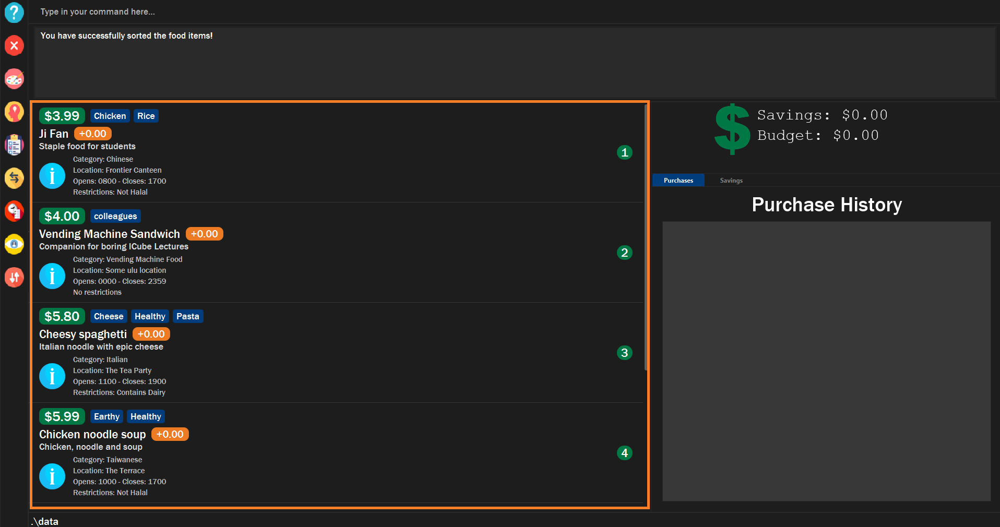
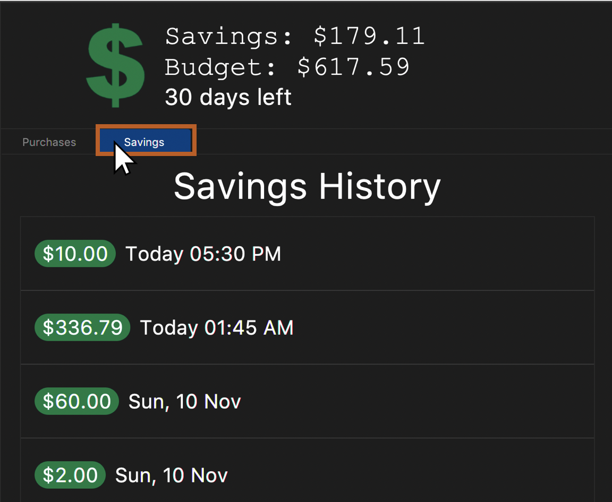
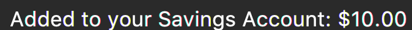
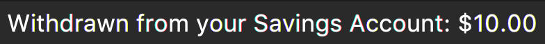

By: Team-F13-2 Since: Sep 2019 Licence: MIT
- 1. Introduction
- 2. Quick Start
- 3. Features
- 3.1. General Commands
- 3.2. Food Items
- 3.3. Sorting
- 3.3.1. Sorts food items based on fields:
sort - 3.3.2. Make your own custom comparator:
makesort - 3.3.3. Sort based on your custom comparator:
customsort - 3.3.4. Auto sorts list based on custom comparator:
autosort - 3.3.5. Views the fields for the custom comparator:
viewsort - 3.3.6. Sorts food items based on natural order:
default
- 3.3.1. Sorts food items based on fields:
- 3.4. Budgeting
- 3.5. Savings
- 3.6. Purchasing
- 3.7. Recommendations
- 3.7.1. Getting a list of recommended food items:
recommend - 3.7.2. Listing likes and dislikes in the recommendation system:
likeordislike - 3.7.3. Adding likes and dislikes to the recommendation system:
likeordislike - 3.7.4. Removing likes and dislikes from the recommendation system:
removelikeorremovedislike - 3.7.5. Clearing all likes and dislikes from the recommendation system:
removelikeorremovedislike
- 3.7.1. Getting a list of recommended food items:
- 3.8. Alias
- 4. Frequently Asked Questions
- 5. Command Summary
1. Introduction
$aveNUS is a desktop financial planning app that allows NUS students to plan their meals according to the amount of budget they set aside per meal in NUS. With $aveNUS, you can more effectively manage your expenses, save your favourite meal options within NUS, edit meal options, and even receive recommendations for meals that suit your budget.
More importantly, $aveNUS is optimized for those who prefer to work on a Command Line Interface (CLI) while still having the benefits of a Graphical User Interface (GUI).
Interested in our app? Section 2, “Quick Start” to get started. Enjoy!
2. Quick Start
Welcome to $aveNUS! If you are just starting out, this quick start will help you get $aveNUS up and running on your computer. It will equip you with the basics you need to know to utilise $aveNUS optimally.
2.1. Using the User Guide
|
Command that can be typed into the command box |
|
Success execution of command |
|
Tips that might be useful |
|
Additional information that is good to know |
|
Important pointers to take note |
2.2. Pre-Requisites
-
Ensure you have Java 11 or above installed in your Computer.
You can download Java 11 from here. -
Copy the file to the folder you want to use as the home folder for $aveNUS.
-
Double-click the file to start the app. The Graphical User Interface (GUI) should appear in a few seconds.
-
Dark Mode GUI of $aveNUS as shown in Figure 1 and Light Mode GUI shown in Figure 2
-
Type the command in the command box and press Enter to execute it.
e.g. typinghelpand pressing Enter will open the help window. -
Some example commands you can try:
-
First, add a food item into the menu by typing
add n/Halal chicken rice p/3.00 d/chicken and rice c/Malayand press Enter -
Take a look at the food item panel appearing on the left of the window as shown below Figure 1 above.
-
Now, try typing
delete 1and then click Enter. Now the card labelled "1. Halal chicken rice" should disappear. -
Type
exitand click Enter and the desktop application should close. -
If everything above executes as stated, you can use $aveNUS to plan your expenditure in NUS now!
-
| This application is optimized for screen resolution of 1400x900 pixels and higher. Anything lower than that and you might experienced some bugs. |
| Ensure that your scaling setting is set to 100% as anything higher might result in text being cut off. |

2.3. Navigating $aveNUS
-
TODO insert when we complete the user interface.
2.4. Using Commands
You can use the commands described in Section 3, “Features” by typing them into the command box and then hitting Enter.
You have to provide additional parameters for some commands, and the format of each command is provided in the command descriptions.
Provided below is a summary of the command format used in the $aveNUS User Guide:
-
Refer to Section 3, “Features” for details of each command.
3. Features
This section highlights the commands that $aveNUS supports. These include information about the command’s function, format as well as example usages of the command.
3.1. General Commands
General commands are used to enhance the user’s experience when using the app and also provide some useful information to make the user more familiar with the app.
3.1.1. Viewing help: help
Display the help screen that allows you to view the list of commands available and also open up the user guide
by clicking the Guide button.
|
You will see the help the help window, diplaying the list of commands available. |
3.1.2. Viewing previously typed commands: history
Shows the user’s previously typed commands in the Results Display.
The user can view up to 10 previously typed commands.
A message stating that "You have not entered any commands." is displayed if you have not input any commands prior to the call to history.
|
| This command only allows you to see previously typed commands. Any commands done through the buttons on the menu pane will not be shown. |
|
You will see a list of commands that you have previously typed in the Results Display. 
Figure 3. Example of view of $aveNUS after user inputs
history. History of previously typed command appears in the Results Display as shown. |
The history command will only display previous commands with no duplicate commands.Eg. typing history twice will only result in a display of history only ONCE in the Results Display.
|
3.1.3. Viewing information about a command: info
Displays the information of the command specified. A new window will be opened showing additional information about the specified command, usage example, and expected output of the command.
$aveNUS can only display one information window at a time. Therefore, subsequent usage of the info command will only
display the latest command specified.
|
| You will not have to worry about opening too many new information window as older information window closes as soon as a new one is opened! |
|
You will see a window pop-up specifying the details of the command you wanted more information about. 
Figure 4. Example of view of information window after user inputs
info edit. |
3.2. Food Items
3.2.1. Add a food item: add
Adds a food item to the food list.
| NAME, PRICE and CATEGORY are mandatory fields. |
The list of recommendations would be cleared if you use the this command. You can re-enable recommendations
by using the recommend command again (see Section 3.7.1, “Getting a list of recommended food items: recommend”).
|
3.2.2. List all food items: list
List all the food items in the list.
The list of recommendations would be cleared if you use the this command. You can re-enable recommendations
by using the recommend command again (see Section 3.7.1, “Getting a list of recommended food items: recommend”).
|
3.2.3. Edit a food item: edit
Edits a food item at a INDEX based on a specific FIELD or fields. INDEX must be a positive integer. At least one FIELD must be given.
3.2.4. Finds food items based on keywords: find
Finds a food items based on specific keywords. Following which, the food items names containing the specific keywords will be shown in the food list.
3.2.5. Filters food items based on criteria: filter
Filters the food items based on the criteria specified. Note: You can need to
have at least one of a FIELD, QUANTIFIER and VALUE.
Based on v1.4, you are only allowed to enter PRICE as a FIELD. Other fields will be available for use
in v2.0 and above.
|
3.2.6. Deletes a food item: delete
Deletes a food items based on the given INDEX. INDEX must be a positive integer.
Note: You are allowed to have more than one INDEX.
3.2.7. Clears wallet purchase history and food items: clear
Clears wallet, purchase history, savings account, wallet, likes, dislikes and aliases in the application.
3.3. Sorting
Allows the user to sort the food items based on his liking. This is done so that the user is able to get the food which is most relevant to his or her preferences.
You must always provide pairs of FIELD and DIRECTION to execute the Sorting commands.
The fields are as followed: NAME, DESCRIPTION, PRICE,
CATEGORY, LOCATION, OPENING_HOURS, RESTRICTIONS.
The directions are as follows: ASC or DESC.
|
Ordering of pairs matters! For example, specifying: PRICE ASC NAME DESC sorts the food items first based on
price in ascending order. Following which, sorts the food items based on names in descending order.
|
3.3.1. Sorts food items based on fields: sort
Sorts all the food items by some specific FIELD.
Note: You can have more than one pair of FIELD and DIRECTION.
The usage of sort will turn the recommendation system OFF it is in use.
|
|
The list of food items will be sorted by the fields you have entered.

|
3.3.2. Make your own custom comparator: makesort
Create your own custom comparator, which will be stored within the storage of the application, using specific FIELD and DIRECTION.
|
Your custom comparator will be shown. 
|
3.3.3. Sort based on your custom comparator: customsort
Sort Using your own custom comparator, which you have creating from MakeSort.
The usage of customsort will turn the recommendation system OFF it is in use.
|
|
The list of food items will be sorted by the fields your custom comparator. 
|
3.3.4. Auto sorts list based on custom comparator: autosort
Turns on and off auto sorting, based on your own custom comparator, every time you make changes to the food list. There are only two states, ON or OFF.
The usage of autosort will turn the recommendation system OFF it is in use.
|
Once you turn auto sorting on, customsort, sort and default will not work. They will only work if and only if you
turn auto sorting off.
|
|
A message will inform you if you have turned autosorting on or off. |
3.3.5. Views the fields for the custom comparator: viewsort
Views the current Custom Sorter.
Format: viewsort
|
A message will inform you of the fields of your custom comparator. |
3.3.6. Sorts food items based on natural order: default
Sorts the food items based on their default ordering, where it is based on ascending category, name and then price.
The usage of default will turn the recommendation system OFF it is in use.
|
|
The list of food items will be sorted in its natural order. 
|
3.4. Budgeting

|
Maximum budget amount is $1,000,000. Maximum budget duration is 365 days (1 year). |
3.4.1. Sets budget for a number of days: budget
Allows the user to set a budget for food expenses.
3.4.2. Top up money into wallet: topup
Allows users to top up the money into their wallet.
| If the top up was successful, you should be able to see the update to your wallet immediately. |
3.5. Savings
Unlike your wallet which has a limit to the amount you can have, i.e. $1,000,000, your savings account has a limit that is imposed by the limitations of the user’s computer’s memory.
The savings account is presented to the user in the display as shown in figure below.
We will be introducing a higher limit for savings so user’s can aim to save more, but that will be in v2.0.
3.5.1. Transfer money from user’s wallet into savings account: save
The user can save an amount of money from the user’s wallet, into his/her savings account.
TODO ADD UI.
| Make sure you have money in your wallet before you save! You cannot save money without having money in your wallet. |
|
You will see a success message and the amount of money you have saved in your savings account. You will be able to view your savings in the savings history tab. The savings will appear GREEN.

Figure 6. Example savings display when "Savings" is clicked as shown after savings are made.

Figure 7. Example success message that appears after keying a successful saving.
|
3.5.2. Withdraw money from user’s savings account into wallet: withdraw
The user can withdraw a sum from his/her savings account, and add it into his/her wallet.
|
You must have money in your savings account before you can withdraw from it. Also, you cannot withdraw an amount that will result in your wallet having more than $1,000,000. |
|
You will see a success message and the amount of money you have withdrawn from your savings account. You will be able to view your withdrawals in the savings history tab. The withdrawals will appear RED. 
Figure 8. Example withdrawal display when "Savings" is clicked as shown after withdrawals are made.

Figure 9. Example success message that appears after keying a successful withdrawal. This appears below where the user typed.
|
3.5.3. Displaying only Savings or Withdrawals: show
The user can restrict his/her view of the savings history display, such that the savings history only displays his/her savings or withdrawals.
|
The restricted display will not be applied after another command is typed. When new command is entered that is not show the savings history display is reverted back to display all savings and withdrawals.
|
3.6. Purchasing

3.6.1. Buy a food item: buy
Allows users to log a food expense into the application.
| Make sure you have enough money in your wallet for the purchase. |
| If the purchase was successful, you should be able to see the update to your purchase history immediately. |
3.7. Recommendations
3.7.1. Getting a list of recommended food items: recommend
Users can get a list of recommendations from the application, based on these factors:
The factors affecting the calculation of the recommendation value is summarized in the tables below.
| Condition 1 | Condition 2 | Bonus |
|---|---|---|
Food tags match the user’s liked tags |
1 or more tags |
+0.05 and +0.03 per matching tag |
3 or more tags |
+0.10 and +0.03 per matching tag |
|
5 or more tags |
+0.25 and +0.03 per matching tag |
|
Food category matches the user’s liked categories |
N/A |
+0.15 |
Food location matches the user’s liked locations |
N/A |
+0.10 |
Food tags match the user’s tags in purchase history |
N/A |
+0.01 per matching tag |
Food category matches the user’s categories in purchase history |
N/A |
+0.02 |
Food location matches the user’s locations in purchase history |
N/A |
+0.03 |
Food purchase is found in user’s purchase history |
2 or more purchases |
+0.10 |
5 or more purchases |
+0.30 |
|
10 or more purchases |
+0.50 |
| Condition 1 | Condition 2 | Penalty |
|---|---|---|
Food price is out of the user’s current budget |
N/A |
Removes the item from the recommendation results |
Food tags match the user’s disliked tags |
1 or more tags |
-0.10 and -0.10 per matching tag |
2 or more tags |
-0.30 and -0.10 per matching tag |
|
3 or more tags |
-0.50 and -0.10 per matching tag |
|
Food category matches the user’s disliked categories |
N/A |
-0.40 |
Food location matches the user’s disliked locations |
N/A |
-0.30 |
Food purchase is found in user’s purchase history |
Within a time period of <2 days |
Applies a decreasing penalty from -10 which diminishes to 0 after 2 days |
| Recommendation turns auto-sorting OFF. |
|
The list of recommendations will be shown, sorted by their recommendation value. 
|
To clear the recommendations, use the list or add command.
Recommendations will be cleared too using specific sorting commands such as sort.
|
The recommended amount to spend per meal is calculated by budget / (daysToExpiry * 2) under the assumption that the
user takes 2 meals per day, provided the budget and daysToExpiry is set by the user.
|
If you do not see any recommendations, make sure that you have a non-zero budget set using
the budget command! See Section 3.4.1, “Sets budget for a number of days: budget” for more information.
|
3.7.2. Listing likes and dislikes in the recommendation system: like or dislike
To list the user’s likes and dislikes, use the command without providing any arguments.
|
The list of liked or disliked categories, tags and locations will be shown. |
3.7.3. Adding likes and dislikes to the recommendation system: like or dislike
Users can specify their liked and disliked categories, tags and/or locations. The recommendation system will then be able to generate more accurate recommendations with the user’s preferences.
| Users can provide multiple categories, tags and/or locations with each command. However, at least one category, tag or location must be provided with each command. |
| Users cannot add what they have already liked into your current dislikes, and vice versa. The user’s likes and dislikes will be also saved into the hard disk for their convenience. |
To add likes:
|
You will see a success message and your liked categories, tags and locations would be added. 
|
To add dislikes:
|
You will see a success message and your disliked categories, tags and locations would be added. |
3.7.4. Removing likes and dislikes from the recommendation system: removelike or removedislike
Users are able to remove their previously added likes and dislikes (if they exist) from the system.
| Users can provide multiple categories, tags and/or locations with each command. However, at least one category, tag or location to remove must be provided with each command. |
| The likes and dislikes must exist in the system before removing them. |
To remove likes:
|
You will see a success message and your liked categories, tags and locations would be removed. |
To remove dislikes:
|
You will see a success message and your disliked categories, tags and locations would be removed. 
|
3.7.5. Clearing all likes and dislikes from the recommendation system: removelike or removedislike
To remove all likes or dislikes, use this command with the ALL flag.
This command is case-sensitive to prevent any accidental clearing of user’s likes or dislikes.
| Only use this command if you are sure that you want to clear your likes and dislikes! |
To remove all likes:
|
You will see a success message and your liked categories, tags and locations would be cleared. 
|
To remove all dislikes:
|
You will see a success message and your disliked categories, tags and locations would be cleared. 
|
3.8. Alias
3.8.1. Editing the alias for a specific command: alias
Users are able to give an alias word for any given command in $aveNUS. You need to give one COMMANDWORD and
one optional ALIASWORD. If no ALIASWORD is given, the ALIASWORD for the specific COMMANDWORD will be cleared.
| Alias Words can only be alphanumeric. |
4. Frequently Asked Questions
-
Will the available food items only be localized around a certain location? What if I am staying in a remote area will I still be able to use this app?
As a user, you are able to add your own restaurants and food items into the app, hence allowing you to add restaurants in a remote location.
-
Am I able to share my expenses with other people?
Yes, you are able to obtain a complete list of your expenses as a text file for sharing.
-
Do I need to install anything to use the app?
You need to ensure that you have Java SE Development Kit version 11 or later to run the app.
-
Am I able to reset the app and remove all of my data?
Yes you can do this by using the clear command.
-
Does this app support another language?
Unfortunately, you are unable to change the app’s language.
5. Command Summary
Command |
Description |
Example Usage |
Add food item. |
|
|
Editing the alias word for any given command word in $aveNUS. |
|
|
Allows the user to sort every time the food list is changed. This is based on a created custom comparator. |
|
|
Allows the user to set a budget amount for food expenses for a certain number of days. |
|
|
Allows users the log a food expense into the application. |
|
|
Clears wallet, purchase history, savings account, wallet, likes, dislikes and aliases. |
|
|
Sorts items based on a created custom comparator. |
|
|
Sorts the food items based on their natural ordering. |
|
|
Deletes a food items based on the given index. |
|
|
Specifies the user’s disliked categories, tags and locations. |
|
|
Edits a food item at a index based on a specific field or fields. |
|
|
Exits the app. |
|
|
Filters the food items based on the criteria specified. |
|
|
Finds food items based on specified keywords. |
|
|
Display possible uses of the application. |
|
|
Displays the list of commands that has been typed by the user. |
|
|
Displays the information of the command specified. |
|
|
Specifies the user’s liked categories, tags and locations. |
|
|
List all saved food items. |
|
|
Makes the custom comparator based on some specified fields and directions. |
|
|
Recommend a food item, based on the user’s budget. |
|
|
Remove dislikes from the user’s specified dislikes or clears the dislikes list. |
|
|
Remove likes from the user’s specified likes or clears the likes list. |
|
|
Saves a specified amount of money from the user’s wallet into his savings account. |
|
|
Sort all the food items by some specified fields and directions. |
|
|
Shows specifically the user’s savings/withdrawals as determined from the user’s input. |
|
|
Allows users to top up the money into their wallet. |
|
|
Views the current Custom Sorter. |
|
|
Withdraw a specified amount of money from the user’s savings account into his wallet. |
|